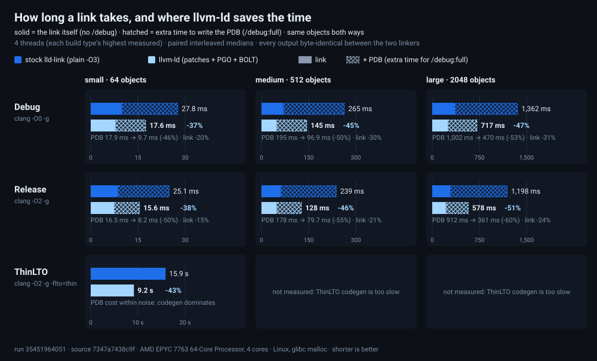

How long a link takes, and where llvm-ld saves the time, right now. Every number is a paired A/B measured in one run on one machine: llvm-ld as it is built to be fast (the link-speed patches plus PGO, ThinLTO and BOLT, via tools/pgo_build.py) against stock lld from the same LLVM 23.1.0 payload before the link-speed patches, built plain (-O3), linking the same corpora interleaved. Both factors are in the numbers: the source patches speed up PDB emission, and PGO + BOLT speed up everything, including LTO codegen. Hosted runners are shared and noisy, so times are only compared within a run, never across runs.
Every cell is gated on byte-identical output: the candidate's EXE (and PDB, when the variant writes one) match the baseline's exactly, and both are self-deterministic. A speedup that changes output bytes is a bug, not a result.

Each corpus is linked twice with the same objects, once per variant, so the hatched segment is only the PDB's extra time:
no /debug/debug:full /pdbaltpath:%_PDB%Build types:
objects: clang -O0 -g -gcodeview · link: /opt:noref /opt:noicf; unoptimized objects, largest debug info, no linker GC or ICF.objects: clang -O2 -g -gcodeview · link: /opt:ref /opt:icf; optimized objects with debug info.objects: clang -O2 -g -gcodeview -flto=thin · link: /opt:ref /opt:icf; the link runs LLVM codegen, which the patches do not touch. Only small is measured: one medium ThinLTO link takes ~2 minutes even on 16 cores.| Build | Variant | Corpus | Threads | Runs | Saved (IQR) | llvm-ld ms | Stock ms | CPU | Peak RSS | EXE | PDB |
|---|---|---|---|---|---|---|---|---|---|---|---|
| Debug | link | small · 64 objects | 1 | 9 | +24.6% (+21.9..+25.3) | 7.4 | 9.7 | -24.4% | +0.0% | aa441509b521 | none |
| Debug | link + PDB | small · 64 objects | 1 | 9 | +31.4% (+29.8..+31.9) | 22.5 | 32.6 | -31.6% | +0.0% | 12dda53bc64a | 7e8881020d9a |
| Debug | link | small · 64 objects | 2 | 9 | +23.2% (+22.2..+25.1) | 7.9 | 10.4 | -21.8% | +0.0% | aa441509b521 | none |
| Debug | link + PDB | small · 64 objects | 2 | 9 | +34.4% (+33.1..+35.8) | 19.4 | 29.7 | -28.0% | +0.0% | 2b31f7af4dcc | 66fa6f5ed128 |
| Debug | link | small · 64 objects | 4 | 9 | +22.2% (+20.1..+23.5) | 8.0 | 10.1 | -20.6% | +0.0% | aa441509b521 | none |
| Debug | link + PDB | small · 64 objects | 4 | 9 | +37.0% (+36.4..+37.6) | 17.8 | 27.9 | -26.0% | +0.0% | 274cc43b557c | 92f4c9a334b9 |
| Debug | link | medium · 512 objects | 1 | 9 | +28.8% (+27.6..+29.3) | 53.1 | 74.5 | -29.7% | +0.0% | 6f1849fff359 | none |
| Debug | link + PDB | medium · 512 objects | 1 | 9 | +34.9% (+34.4..+34.9) | 217.3 | 333.8 | -35.3% | -1.9% | 04f657d7f9f8 | 4be7726c6ac5 |
| Debug | link | medium · 512 objects | 2 | 9 | +29.8% (+29.6..+30.1) | 48.5 | 69.5 | -29.1% | +0.0% | 6f1849fff359 | none |
| Debug | link + PDB | medium · 512 objects | 2 | 9 | +41.9% (+41.6..+42.6) | 164.1 | 282.0 | -31.4% | -2.3% | 48a506a3f088 | 7b3e7a7a242f |
| Debug | link | medium · 512 objects | 4 | 9 | +30.7% (+30.1..+31.0) | 47.5 | 68.7 | -27.5% | +0.0% | 6f1849fff359 | none |
| Debug | link + PDB | medium · 512 objects | 4 | 9 | +46.0% (+45.6..+46.6) | 141.8 | 262.8 | -27.1% | -2.4% | 494bbe7a150b | b9177cf5770d |
| Debug | link | large · 2048 objects | 1 | 9 | +27.9% (+26.7..+28.1) | 296.8 | 411.3 | -28.0% | -2.0% | 3cba4e41ea8b | none |
| Debug | link + PDB | large · 2048 objects | 1 | 9 | +33.7% (+32.8..+34.3) | 1240.7 | 1868.3 | -34.0% | +3.5% | 8e462a34000c | 5b952c670cdd |
| Debug | link | large · 2048 objects | 2 | 9 | +30.4% (+29.9..+30.8) | 263.1 | 380.4 | -25.9% | -2.0% | 3cba4e41ea8b | none |
| Debug | link + PDB | large · 2048 objects | 2 | 9 | +43.1% (+42.8..+43.5) | 856.4 | 1504.0 | -30.9% | +4.1% | 804e95cb84e8 | 14f2d27f41cd |
| Debug | link | large · 2048 objects | 4 | 9 | +33.1% (+32.8..+33.7) | 242.7 | 362.8 | -25.5% | -2.0% | 3cba4e41ea8b | none |
| Debug | link + PDB | large · 2048 objects | 4 | 9 | +48.3% (+48.1..+48.6) | 716.3 | 1384.1 | -25.7% | +4.1% | aadd6e69b1dd | 54da8b61969d |
| Release | link | small · 64 objects | 1 | 9 | +15.6% (+13.7..+15.8) | 4.6 | 5.5 | -15.9% | +0.0% | 08b3db4df8fe | none |
| Release | link + PDB | small · 64 objects | 1 | 9 | +38.0% (+37.5..+38.3) | 12.5 | 20.2 | -38.4% | +0.0% | cc5168bd76bb | e406387e90aa |
| Release | link | small · 64 objects | 2 | 9 | +13.9% (+13.6..+17.0) | 5.2 | 6.2 | -16.5% | +0.0% | 08b3db4df8fe | none |
| Release | link + PDB | small · 64 objects | 2 | 9 | +35.7% (+34.1..+36.7) | 13.4 | 20.6 | -25.7% | +0.0% | 069b3f826455 | db71a8a8109d |
| Release | link | small · 64 objects | 4 | 9 | +15.1% (+11.7..+15.5) | 5.2 | 6.0 | -11.9% | +0.0% | 08b3db4df8fe | none |
| Release | link + PDB | small · 64 objects | 4 | 9 | +39.0% (+37.9..+39.3) | 11.9 | 19.3 | -25.4% | +0.0% | d66f878e593d | 52409c371698 |
| Release | link | medium · 512 objects | 1 | 9 | +0.3% (-1.7..+0.4) | 46.9 | 47.0 | -18.1% | +0.0% | 297950d80255 | none |
| Release | link + PDB | medium · 512 objects | 1 | 9 | +29.6% (+28.7..+29.8) | 204.7 | 291.3 | -42.4% | -3.9% | 0e7ca73f77b1 | 7f067a71af50 |
| Release | link | medium · 512 objects | 2 | 9 | +0.5% (+0.1..+2.0) | 46.8 | 47.0 | -13.0% | +0.0% | 297950d80255 | none |
| Release | link + PDB | medium · 512 objects | 2 | 9 | +30.8% (+28.8..+32.3) | 191.2 | 272.0 | -30.8% | -4.5% | b49c667a3d6c | 33be5900eb30 |
| Release | link | medium · 512 objects | 4 | 9 | +0.4% (-0.1..+1.2) | 46.8 | 46.8 | -10.0% | +0.0% | 297950d80255 | none |
| Release | link + PDB | medium · 512 objects | 4 | 9 | +32.5% (+32.1..+34.7) | 173.7 | 257.9 | -28.4% | -4.5% | 4695e015d906 | c755d233ccea |
| Release | link | large · 2048 objects | 1 | 9 | +9.8% (+8.4..+9.9) | 343.3 | 380.7 | -16.6% | -2.5% | b1cb1d1fbe6e | none |
| Release | link + PDB | large · 2048 objects | 1 | 9 | +26.3% (+20.4..+29.9) | 1358.4 | 1872.0 | -39.9% | +2.1% | 7ad3a0572a10 | 65655d04b89a |
| Release | link | large · 2048 objects | 2 | 9 | +10.4% (+9.4..+10.9) | 317.2 | 353.1 | -14.7% | -2.5% | b1cb1d1fbe6e | none |
| Release | link + PDB | large · 2048 objects | 2 | 9 | +27.3% (+26.5..+29.4) | 1309.9 | 1793.8 | -34.0% | +1.0% | 3b96c8db1084 | 26fd50053780 |
| Release | link | large · 2048 objects | 4 | 9 | +13.1% (+11.7..+13.7) | 303.8 | 348.3 | -12.0% | -2.5% | b1cb1d1fbe6e | none |
| Release | link + PDB | large · 2048 objects | 4 | 9 | +29.5% (+24.2..+31.3) | 1185.0 | 1654.2 | -27.5% | +1.1% | ad8571493b45 | f918ad69ff13 |
| ThinLTO | link | small · 64 objects | 4 | 5 | +35.9% (+34.8..+36.1) | 5582.5 | 8708.1 | -35.7% | +0.0% | c245d815f4fa | none |
| ThinLTO | link + PDB | small · 64 objects | 4 | 5 | +36.1% (+35.4..+36.4) | 5464.2 | 8525.6 | -36.0% | +0.0% | 55a23bacc992 | d4ed740954f0 |
Thread counts measured this run: 1, 2, 4. The workflow measures 1, 2 and 4 threads plus the runner's core count (4) when that is larger than 4; the chart shows each build type at its highest, 4 threads here. The headline +46% in the project notes was measured at 16 threads on a local workstation; this run's highest thread count cannot reproduce that regime, so the speedup at 4 threads is expected to be smaller.
ThinLTO is measured on small at the highest thread count only: the link runs LLVM codegen, which the patches do not touch. Only small is measured: one medium ThinLTO link takes ~2 minutes even on 16 cores.
Allocator: on Linux the benchmarked llvm-ld-direct allocates through glibc malloc, because MI_MALLOC_OVERRIDE is defined only for WIN32 builds in CMakeLists.txt. The shipped Windows DLL allocates through mimalloc. These are parallelisation patches, and allocator behaviour under thread contention differs between glibc arenas and mimalloc.
Measured on Linux; the shipping target is Windows. That the relative speedup transfers to Windows is asserted, not measured: no Windows run of this paired ratio has been published yet, and at least one optimised phase is known to diverge (createFutureForFile is std::launch::deferred on Linux and std::launch::async under _WIN64).
Run 36002036774 attempt 1;
source 631e110e3edd8e6948b350e99e6446f78872f438;
baseline f9cdd65cbfb5f64654ce428524a8126652bed8a7
(stock lld: the payload before the link-speed patches, plain -O3 build).
Runner Ubuntu 24.04.5 LTS, AMD EPYC 7763 64-Core Processor / INTEL(R) XEON(R) PLATINUM 8573C / AMD EPYC 9V45 96-Core Processor,
4 cores, kernel 6.17.0-1022-azure;
fingerprint f36f878ffc4a51f79767e3a8196e62e0703abc2a92de7857fb60ea6d8e469f09.
python tests/perf/gen_corpus.py --out build-perf/corpus --mode release --profile large
python tests/perf/bench.py --candidate build/llvm-ld-direct --baseline build-perf/baseline/llvm-ld-direct --corpus build-perf/corpus/release/large --variant pdb --threads 4 --runs 9